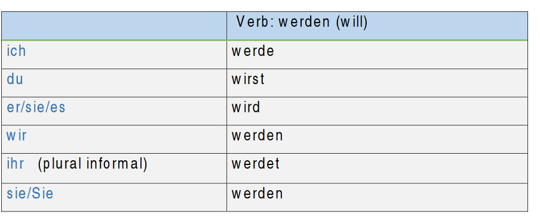
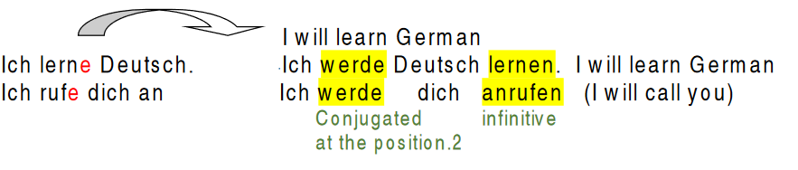

The Future tense – Das Futur
There are 2 ways to express future tense in German.
 The first way is by using the present simple tense with future time
phrases.
The first way is by using the present simple tense with future time
phrases.
Beispiel:
Ich fahre morgen nach Berlin. (I am going to Berlin tomorrow)
Wir spielen nächste Woche Fußball. (We are going to play football next week)
- The second way is to use the verb ‘werden’ (will) which is an irregular
verb and acts as auxiliary verb and the infinitive of the main verb. It
follows the same pattern of the modal verbs. Werden + infinitive
The verb ‘werden’ is conjugated as follows:

‘werden’ is conjugated in the second position according to the subject and the infinitive of the main verb goes to the end of the sentence or the clause.
Beispiel:
